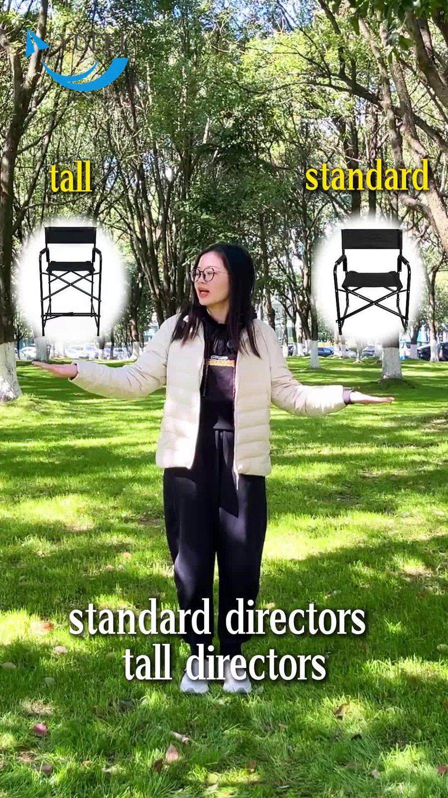
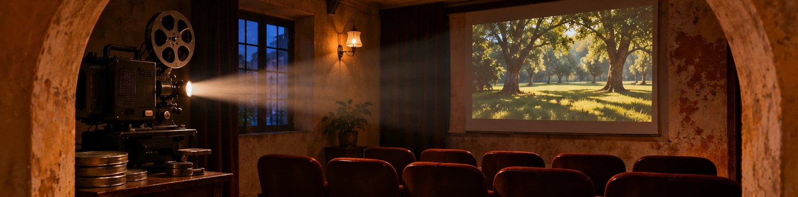
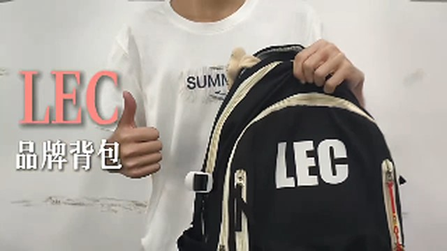
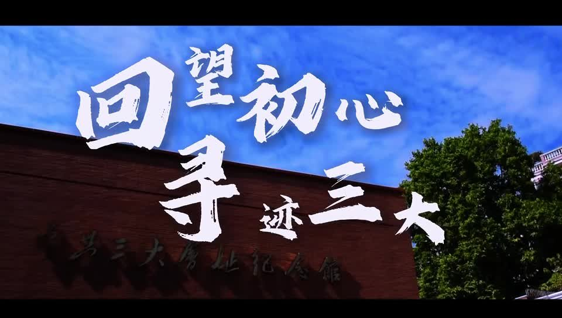

商用折叠椅 · 户外实拍
YUFEI 折叠椅
折叠椅的高度差，怎么让买家一眼看懂？我把标准款和高款放进同一个户外场景，用人物作参照，再配上英文标注，让观众能直接对照两款椅子。
从产品调研到脚本、现场拍摄和剪辑，我围绕这一个选购问题安排镜头。

Motion pictures

商用折叠椅 · 户外实拍
折叠椅的高度差，怎么让买家一眼看懂？我把标准款和高款放进同一个户外场景，用人物作参照，再配上英文标注，让观众能直接对照两款椅子。
从产品调研到脚本、现场拍摄和剪辑，我围绕这一个选购问题安排镜头。

箱包产品 · 展示短片
这支短片从拿在手里的双肩包切入。人物给出了包身大小的参照，正面镜头则把品牌标识和外形交代清楚。
我独立完成调研、脚本、拍摄和后期。剪辑时把整体展示与局部细节排在一起，让观众先认出产品，再看清细节。

毛概课研练作业 · 实地拍摄
为了把课堂上读到的历史拍成影像，我带着脚本走进中共三大会址，让实地看到的建筑与空间成为短片的叙事线索。
从脚本撰写、现场取景到后期剪辑，都由我独立完成。实拍也让我学会根据现场能拍到的内容调整原来的分镜。
课堂纪实 · 学院视频号
这是一支为学院视频号剪辑的课程花絮，记录社媒运营进阶课的现场。它面向没有坐在教室里的观众，需要在短片里交代这是一门什么课、现场是什么样。
我从课堂素材中选取讲授片段，围绕课程主题安排节奏，完成剪辑并发布到学院视频号。
生成式动画 · Seedance 2.5
我用一场角色对决练习动作分镜。先把交锋拆成连续的镜头，再把角色动作、画面风格和镜头变化写进 Seedance 2.5 的提示词。
每轮生成后，我对照分镜检查动作是否清楚、前后画面能否接上，再调整提示词，挑选能连成一段戏的镜头。


QRveo · 墨西哥市场
我把产品演示、包装扫码等使用场景做成西语推广短片，发布在下面的社媒账号。点开账号，可以继续看我为同一产品制作的不同版本。